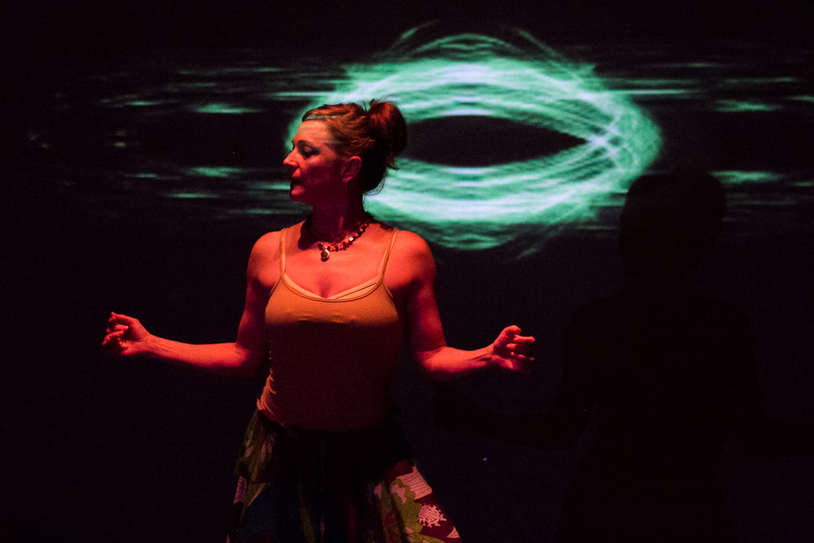
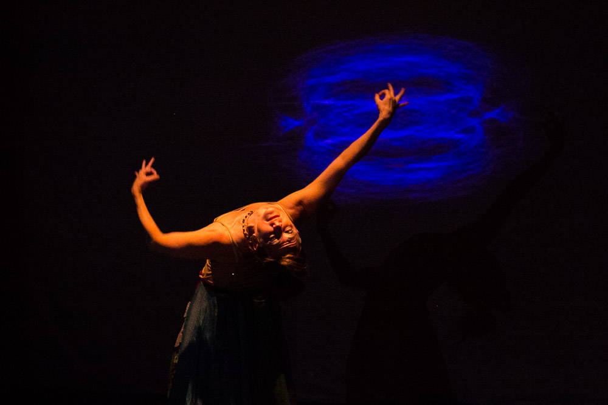

Kate Jenkins Mercado
Mechanical, inflammable, insufferable.


Home
Papers and Talks
Boing
Synesthesia
Marmot Creek
The Glass Banana
LASER
Tesselcopter
Hackathons
Travels
Synesthesia
Synesthesia is an open source sound and movement visualizer developed as a collaboration between Kine-Tech, an arts and technology collective, and Hack Reactor. It was first performed in public on November 17, 2013, at The Garage in San Francisco, as part of the SEE/SOUND/MOVE experimental art series that is intended to showcase the intersection of art and technology. A singer and a dancer interacted with the devices to control a WebGL projection canvas for an interactive sound, motion and light experience.
How It Works
Synesthesia mixes motion input from mobile devices and audio input during a vocal performance to create interactive projection art in a web browser. A tablet device or laptop computer acts in real time to control which client phones drive the light or motion. The audience is an integral part of the show because their phones contribute to the lighting of the performance space when they are connected to our local wi-fi network. This level of interactivity acts to reduce the abstraction between technology and the arts community, making art more accessible to the technological and vice versa.
The WebGL visualization is a particle system driven by data from WebAudio, an ultramodern API for accessing internal sound card data directly with JavaScript. The server code was Node.js and Socket.IO and the client interfaces were managed with Backbone.js.
About The Synesthesia Team
George Bonner (@georgebonnr) has previous experience as an audio engineer and full-time music professional in Dallas. He has written a bleeding-edge library to extend the WebAudio native functionality and is passionate about intuitive design, whether it's expressed through a program, a user interface, or a song.
Before starting at Hack Reactor, David Ryan Hall (@ryanMG) worked in Los Angeles as a cinematographer, photographer and graphic designer. His interest in collaborating with Kine-Tech was sparked from his time spent working as a photographer for the Invertigo and Los Angeles Contemporary Dance Companies. He led the hugely complex task of client-side interactions with multiple phones and tablets.
Kate Jenkins (@katemonkeys) put her MIT materials science background to use in the rendering of the particle system and transforming audio data to motion and color. Her sustained interest in kinetic performance comes through volunteering with The Crucible, an industrial arts studio in Oakland.
Joey Yang (@joeyyang) coordinated the backend work with sockets and server reliability. His ties to the arts come through non-commercial radio. Joey was station manager of KTRU, Rice University's student run radio station, which is committed to showcasing music from the Houston community and the state of Texas.